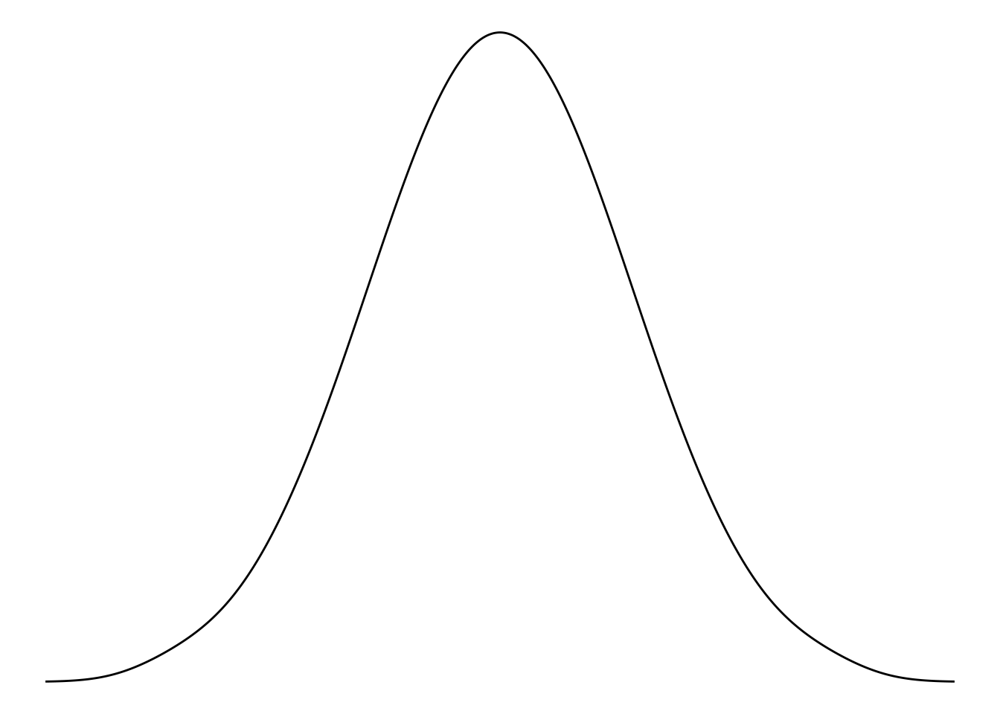
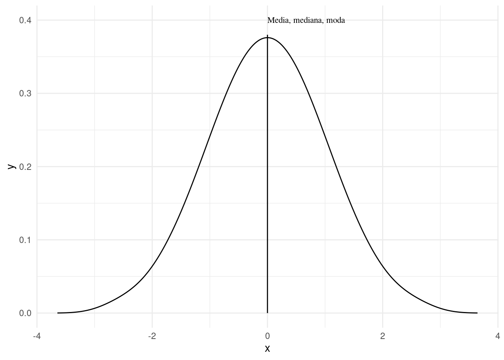
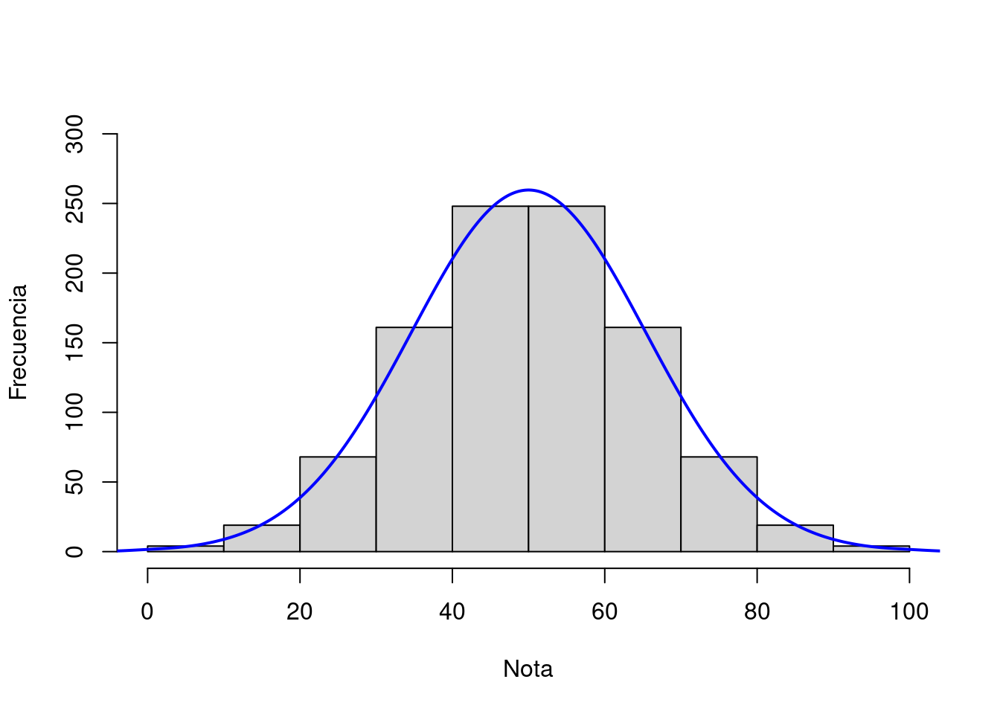
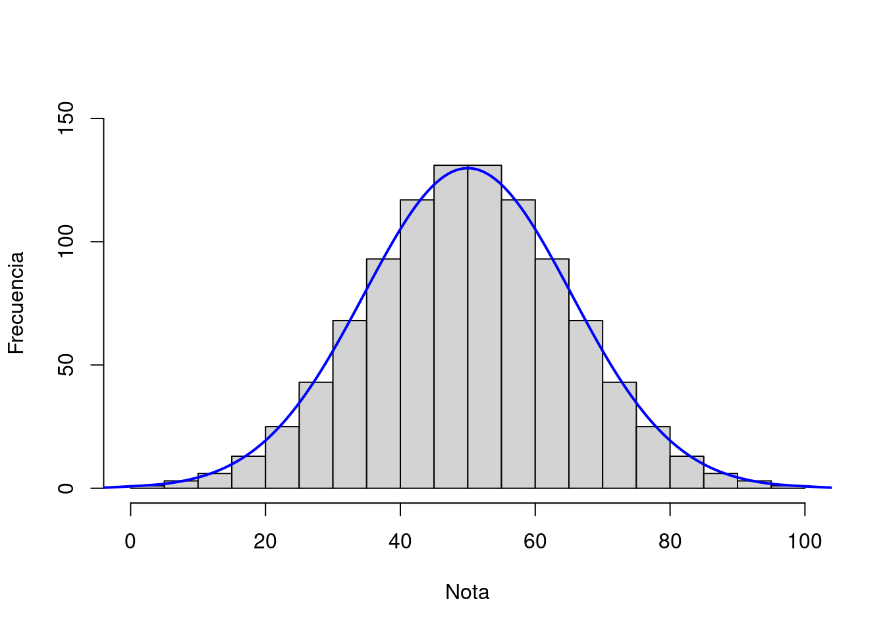
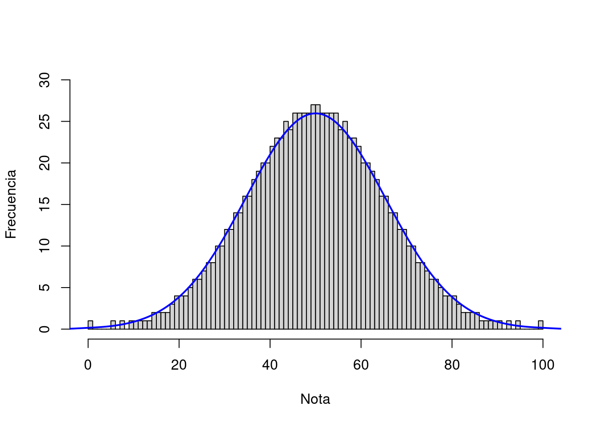
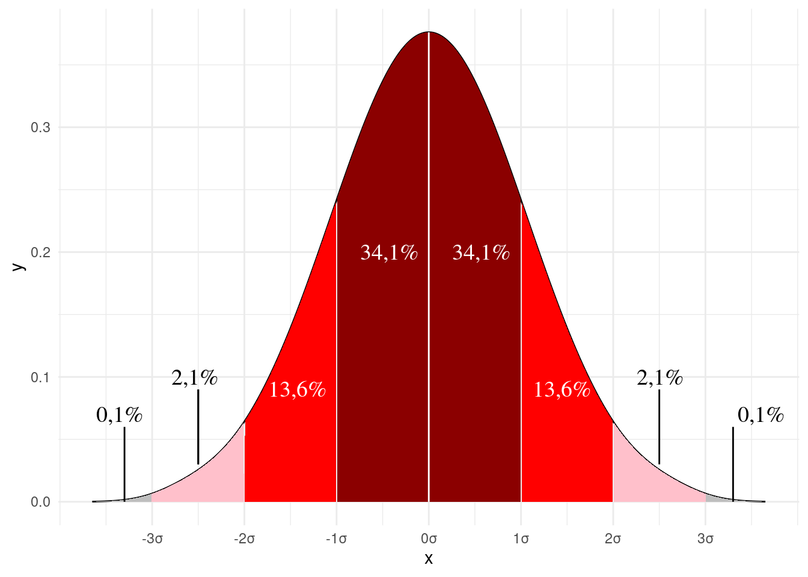
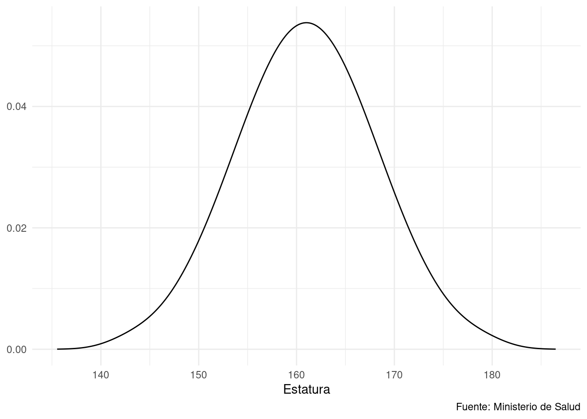
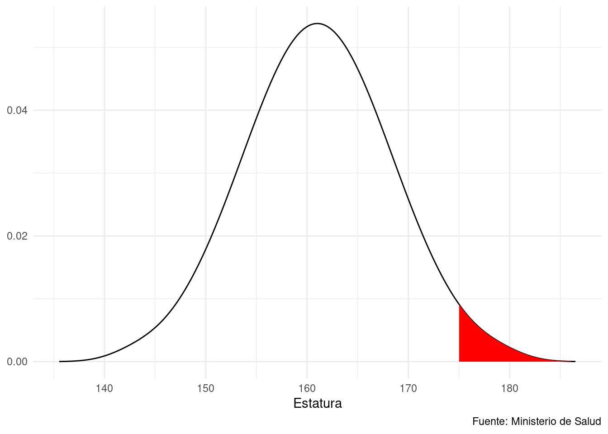

4 La distribución normal
En el Capítulo 2 tocamos brevemente la llamada distribución normal. En este capítulo vamos a desarrollar con más detalle esta distribución, fundamental para muchas técnicas estadísticas y cuantitativas.
4.1 Importancia de la distribución normal
Como vimos en la sección @ref(perfil-de-la-distribucion), si tenemos muchos datos y construimos un polígono de frecuencias, es posible trazar una curva entre los puntos de la distribución. También mencionamos que la llamada distribución normal es de particular interés para trabajo estadístico y cuantitativo. Hay varios razones de ello:
- Muchos fenómenos que podemos medir tanto en las ciencias exactas como las sociales de asemejan en su frecuencia a esta distribución.
- La distribución normal tiene ciertas propiedades matemáticas que nos permiten predecir qué proporción de la población (estadística) caerá dentro de cierto rango si la variable tiene distribución normal.
- Varios tests de significanza de diferencia entre conjuntos de datos presumen que los datos del conjunto tiene una distribución normal.
4.2 Propiedades de la curva normal
Como ya vimos, la curva normal tiene forma de campana y es simétrica. Por ende, las tres medidas de centralización la media, la mediana y la moda coinciden en el punto superior de la curva, como lo podemos apreciar en la Figura 4.1.

Ciertas propiedades importantes de esta curva se relacionan con la manera en que el área debajo de la curva de puede seccionar con lineas verticales con origen en distintos puntos del eje horizontal. Para explorar estas vamos a considerar algunos histogramas, el tipo de visualización que vimos en la sección @ref(histogramas). El alto de cada barra es proporcional a la frecuencia de observaciones y como el ancho de las barras es el mismo en todos los casos el área de cada barra también es proporcional a la frecuencia de observaciones. El ancho puede representar una sola unidad, o varias si agrupamos, por ejemplo por rango etario como lo vemos en la Figura 4.2, en el que hemos sacado una muestra aleatoria de mil observaciones de un test de matemáticas a nivel nacional. Los hemos agrupado por rangos de diez, es decir de 0 a 10, de 10 a 20 y así sucesivamente. Hemos sobrepuesto una curva normal teórica para apreciar hasta qué punto se asemeja la distribución observada a la teórica.

Ahora, bien, si en lugar de agrupar las notas en grupos de diez1 los podemos también agregar en grupos de cinco. Entonces obtenemos un histograma como el de la figura Figura 4.3 .

Podemos seguir achicando el ancho de las barras, y vemos que si bien el histograma es puntudo mientras menos anchas son las barras más se aproxima a la curva. En la Figura 4.4 hemos achicado las barras para que cada una represente tan solo un valor entero, es decir tan solo una de las cien notas posibles. Se entiende que es posible seguir con más precisión si, por ejemplo, el examen fue calificado con la posibilidad de asignar notas con decimales.

La curva normal de define por dos propiedades: La media y la desviación estándar. Si conocemos estos dos valores es posible construir la curva aplicando una fórmula 2 un tanto compleja y con poca importancia fuera del ámbito plenamente teórico.
De más importancia son algunas propiedades que tiene la curva. Si graficamos la curva normal y expresamos los valores en el eje horizontal en desviaciones estándares (también se dice «sigmas» por su letra griega \(\sigma\)), el área que está de cada lado de la linea es constante y conocido. Si trazamos una linea justo en el medio (\(\sigma=0\)), sabemos que un 50% de las observaciones están a la derecha y la izquierda de esa linea. Lo mismo aplica a una distribución expresado en un histograma. En la fig-normal-curve-with-cuts vemos cuales son los cortes para desviaciones estándares de menos 3 a 3.

Esta propiedad es de bastante utilidad y se puede aprovechar de varias maneras. Si tenemos una muestra de datos cuya distribución presumimos normal (en el ?sec-test-de-normalidad vamos a desarrollar cómo lo podemos determinar) ya sabemos que más o menos el 68% de las observaciones va estar dentro de ± una desviación estándar de la media y más del 95% se encontrará dentro de dos desviaciones. Por último el 99% de las observaciones de encuentran dentro de tres desviaciones estándares de la media. A veces se refiere a esta propiedad como la regla empírica o la regla de de 68-95-99,7.
Variables normalizadas
En textos de estadística frecuentemente se habla de variable normalizada, también se conoce como unidad tipificada, variable centrada reducida o variable estandarizada. Normalizar una variable es simplemente expresar su magnitud en unidades de desviación estándar. Para lograr ello tomamos la variable, restamos la media y dividimos por la desviación estándar. En literatura en inglés es de uso frecuente el término «z-score», por lo que su definición formal (véase @def-definition-z-score)) lleva esta letra.
Definición 4.1 (Variable normalizada) La variable normalizada z de un conjunto de datos X se obtiene por la fórmula siguiente:
\[ z = {x-\bar{x}\over{\sigma}} \]
donde:
- z: la variable normalizada
- x: una observación de X
- \(\bar{x}\): la media de las observaciones
- \(\sigma\) o s: la desviación estándar de la población o muestra respectivamente.
Es importante entender que normalizar una variable no cambia su valor, solo su unidad de cuenta: El lo mismo comprar medio kilo de queso que comprar quinientos gramos.
Normalizar las variables nos permite comparar su distribución independientemente de su unidad de cuenta y amplitud, también nos permite sacar conclusiones sobre probabilidades y proporciones. Vamos a desarrollar esta idea por medio de un ejemplo.
Ejemplo 4.1 (Analizando datos del ministerio de salud) En el 2007 el Ministerio de Salud de Argentina realizó un estudio (ENNyS 2007) que entre otras recopiló datos sobre la estatura de las argentinas entre 19 y 49 años. La media fue de 161,01 centímetros con una desviación estándar de 6,99. Con estos datos podemos construir nuestra curva.

Ahora, sabiendo que esta variable tiene una distribución normal podemos saber que casi el 70% de las argentinas miden entre 154,04 y 168 centímetros. También podemos encontrar respuesta a una pregunta como: ¿qué proporción de la población femenina mide más que 175 centímetros? Para ello tenemos que normalizar el dato así:
\[ z = {175 - 161,01\over{6.99}} = {13,99\over{6.99}} = 2,001 \]
Con este número podemos volver a la @fig-normal-curve-with-cuts y fijarnos que con por arriba de 2 desviaciones estándar (o 2\(\sigma\)) está el 2,2% de la población. Es el área indicado en rojo en la figura @fig-curva-con-segmento.
#| label: fig-curva-con-segmento
#| echo: false
#| fig-cap: "Proporción de argentinas que miden más de 175 centímetros"
plot_estatura+
geom_area(position = "identity", data = estatura %>% filter(x>175), fill='red')
En este caso tuvimos un poco se suerte ya que la variable normalizada resultó un número redondo que era fácil encontrar en la figura Figura 4.5. Ahora digamos que queremos conocer la proporción de la población que mide menos de 150 centímetros, ¿cómo hacemos? Primero normalizamos:
\[ z = {150 - 161,01\over{6.99}} = {11,01\over{6.99}} = -1,575 \]
Con este número podemos sacar la proporción por ejemplo calculando el área debajo del segmento de la curva con cálculos integrales, lo podemos buscar en una tabla de probabilidades o podemos recurrir a la función pnorm (p: probabilidad, norm: normal)de R así:
pnorm(-1.575)#> [1] 0.05762822entonces el 5,76% de la población de argentinas entre 19 y 49 años miden menos de un metro con cincuenta.
También podemos expresar esto en términos de probabilidades: Si medimos una mujer argentina de entre 19 y 49 años seleccionada aleatoriamente de la población, la probabilidad de que mida menos de 150 centímetros es de 5,76% (p=0,0576).
4.3 Evaluar la normalidad
Hemos visto que el hecho de que una variable tenga una distribución normal nos resulta muy útil para extraer información sobre sus propiedades. También nos permite realizar algunos tests estadísticos que veremos en capítulos posteriores.
En la [sección @sec-cual-usar] decidimos usar la media como medida de centralización porque las tres medidas disponibles –media, mediana y moda– se aproximaban unas a otras. Si queremos saber si una variable se aproxima a la curva normal podemos generar un histograma y sobreponer una curva normal. Así podemos sacar alguna conclusión inspeccionando el gráfico.
También podemos valernos del conocimiento de la proporción de observaciones que deben estar dentro de la primera y segunda desviación estándar y verificar si nuestros datos se conforman con estas predicciones.
Ejemplo 4.2 (Notas de dos cursos)
Si tomamos nuestros datos de las notas de nuestros dos cursos que vimos en la ?sec-estadisticas-descriptivas-e-inferenciales y que fuimos desarrollando a lo largo de los capítulos anteriores podemos realizar este análisis.
Grupo A: {15, 12, 11, 18, 15, 15, 9, 19, 14, 13, 11, 12, 18, 15, 16, 14, 16, 17, 15, 17, 13, 14, 13, 15, 17, 19, 17, 18, 16, 14}
Grupo B: {11, 16, 14, 18, 6, 8, 9, 14, 12, 12, 10, 15, 12, 9, 13, 16, 17, 12, 8, 7, 15, 5, 14, 13, 13, 12, 11, 13, 11, 7}
- Grupo A:
- Media: 14.93
- Desviación estándar: 2,49
- Entre \(\pm{1}\) desviación: 66%
- Entre \(\pm{2}\) desviaciones: 96%
- Grupo B:
- Media: 11,76
- Desviación estándar: 3,31
- Entre \(\pm{1}\) desviación: 66%
- Entre \(\pm{2}\) desviaciones: 96%
Observamos que nuestras notas carecen en cierta medida de valores extremos, sin embargo la muestra es relativamente pequeña con lo cual nos conformamos con estos resultados y consideramos normales las distribuciones.
Ejemplo 4.3 (Ejemplo en R)
Si no queremos hacer estos cálculos a mano los podemos hacer también en R, así:
grupo.A = c(15, 12, 11, 18, 15, 15, 9, 19, 14, 13, 11, 12, 18, 15, 16, 14, 16, 17, 15, 17, 13, 14, 13, 15, 17, 19, 17, 18, 16, 14)
media= mean(grupo.A)
desviacion = sd(grupo.A)
N = 30
sum(
grupo.A < media + desviacion
&
grupo.A > media - desviacion
)/N#> [1] 0.6666667sum(
grupo.A < media + desviacion * 2
&
grupo.A > media - desviacion * 2
)/N#> [1] 0.9666667Existen también tests más formales de normalidad que desarrollaremos en capítulos posteriores.
4.4 Glosario
- Regla empírica
- Cuando la distribución es normal el 68% de las observaciones se encuentran entre \(\pm\) una desviación estándar de la media, el 95% entre dos desviaciones estándar y el 99,7% entre tres. Equivalente en inglés: «Empirical rule».
- Variable normalizada
-
Variable expresada en desviaciones estándar Fórmula: \(z = {x-\bar{x}\over{\sigma}}\) o \(z = {x-\bar{x}\over{s}}\) Función relevante en R:
scale. Equivalente en inglés: «z-score».
ENNyS. 2007. «Encuesta Nacional de Nutrición y Salud.» Ministerio de Salud de Argentina.